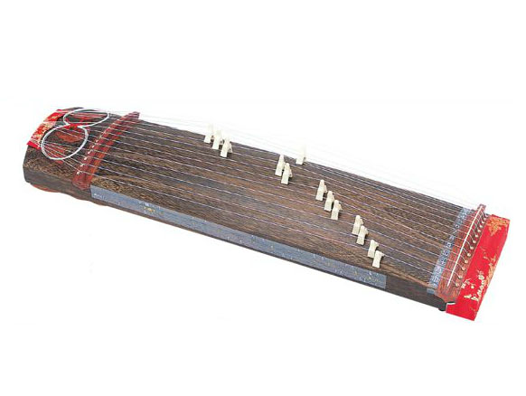
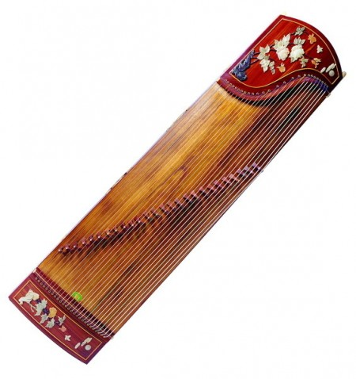

As one of the earliest musical instruments in China, Zheng has a history of 2400 years, and that is why it is also called Guzheng, (Gu means ancient). People named Zheng according to its sound, and it has been appreciated for over 20 centuries because of its unique sound: gentle and powerful.
| Qin Dynasty | Han Dynasty | Tang Dynasty | Modern China |
|---|---|---|---|
| 400 B.C | 203 B.C | 620 | 1980 |
| No recorded image |  |  |
Zheng has been played since it was invented while other musical instruments like konghou has diminished, and instruments like yangqin and erhu were introduced to people. Zheng is always there because of its unique and beautiful sound, and the satisfaction for both refined and popular taste. Looking back to the development of Zheng, the economy in China is a decisive factor behind its popularity. Zheng has a brighter future due to the increasing GNP in China, and globalization brought it to a world stage. I am confident that this ancient Chinese instrument and the culture will continue to pass down generations to come.
Here is a presentation of the development of Zheng.
All the information is provided by Rosalie Zhao.